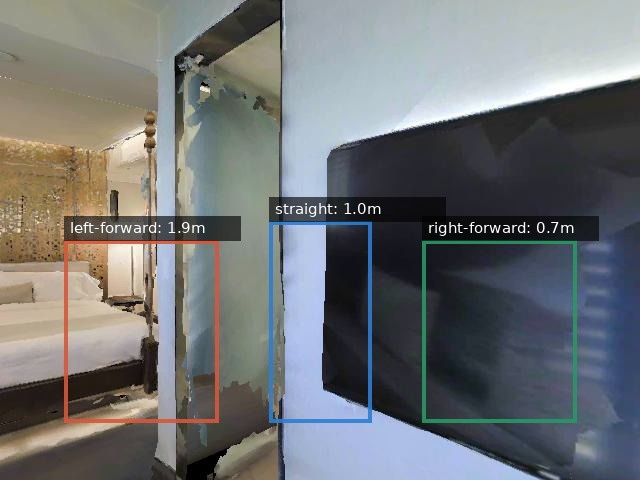
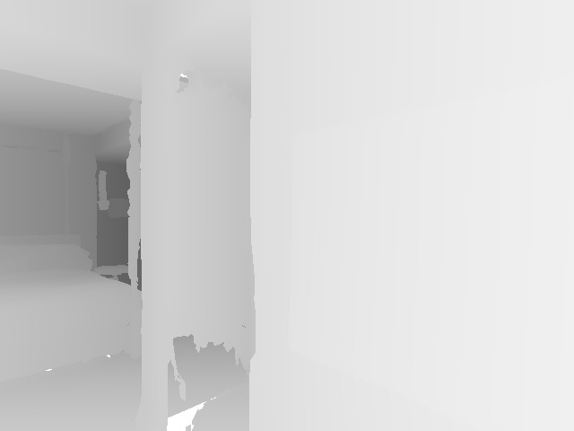

You are a cylindrical robot with width 0.50 m at the R2R camera pose. If you continue straight forward, how many body-widths of visible clearance are available?
Options
- <2
- 2-4
- 4-8
- >8
GT Answer
2-4
GT derivationfront depth quantile=1.02 m; body-widths=2.04
Posexyz=[-9.136, 1.322, 1.482], quat=[-0.924, 0.0, 0.383, 0.0], hfov=79.0
R2R instructionExit the bedroom, enter the bathroom, wait at the toilet.
Source: R2R extracted rgb/depth/pose · episode 17DRP5sb8fy_r2r_000515